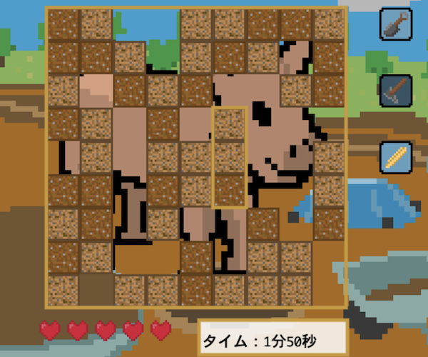
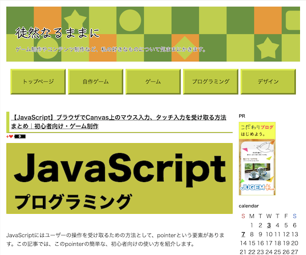
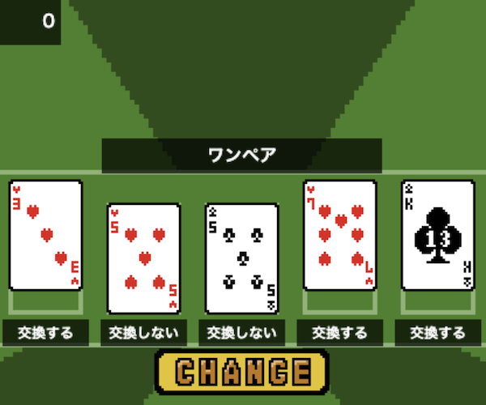

ポートフォリオ

はっくつゲーム
制作時期：大学３年春 〜 大学３年冬
概要：ブラウザゲーム。大学の"社会プロジェクト実習"の授業内で四條畷市教育委員会をクライアントとし制作。四條畷市の埋蔵文化財をテーマにしている。

徒然なるままに
制作時期：大学３年夏 〜
概要：私のこれまでの学びをまとめたブログサイト。JUGEMブログというサービスをもとにHTMLやCSSを書き換え、自己流のサイトを制作した。現在も更新中。

POKER
制作時期：大学１年夏 〜 大学２年春
概要：シンプルなポーカーゲーム。ブラウザでプレイできる。